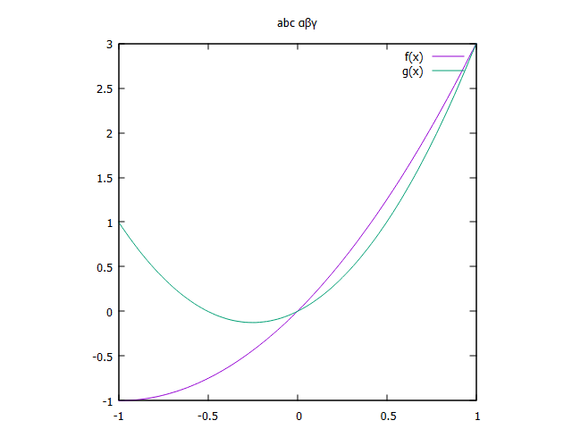

1-2. 基本設定
Gnuplotの設定は主に set コマンドで行います。
出力形式、画像サイズ、軸ラベル、描画範囲を先に決めてから plot する流れです。
出力形式を決める
画面で確認するだけなら設定なしでも使えますが、画像として保存する場合は
terminal と output を指定します。
set terminal pngcairo size 900,600 enhanced font "Arial,14"
set output "figure.png"
plot sin(x)
set output
pngcairo は線や文字がきれいに出やすいので、まず試す出力形式として扱いやすいです。
PDFで保存したい場合は pdfcairo を使います。
軸ラベルと範囲
set xlabel "Time [s]"
set ylabel "Voltage [V]"
set xrange [0:10]
set yrange [-1.5:1.5]
plot sin(x)
範囲を自動に戻す場合は set autoscale を使います。
片方だけ戻すなら set autoscale x や set autoscale y も使えます。
目盛りとグリッド
set xtics 2
set ytics 0.5
set mxtics 2
set mytics 2
set grid
xtics と ytics は主目盛りの間隔、
mxtics と mytics は補助目盛りの分割数です。
グリッドを入れると値を読み取りやすくなります。

保存用のスクリプトでは、最後に set output を置いて出力先を閉じておくと安心です。
その後の描画が同じファイルへ流れ込む事故を避けられます。